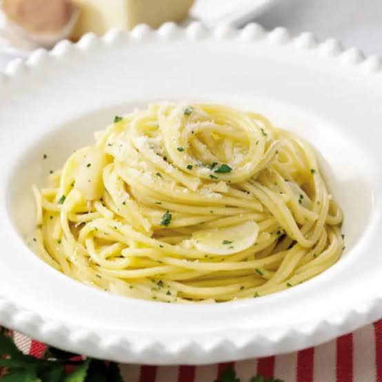

Receta: spaguetti a la boloñesa


Bienvenido a mi pagina de recetas caseras. Usa el menu de arriba para ver los detalles de la receta.

Bienvenido a mi pagina de recetas caseras. Usa el menu de arriba para ver los detalles de la receta.